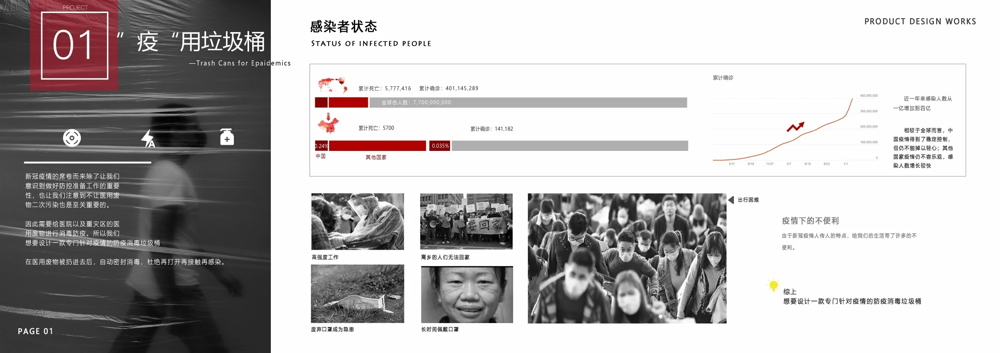
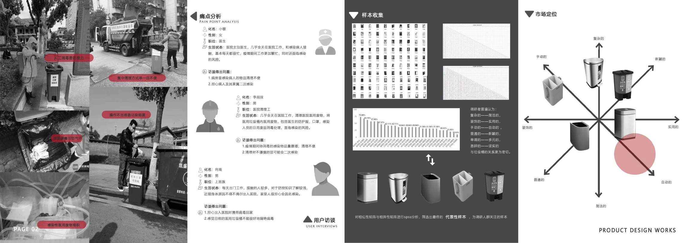
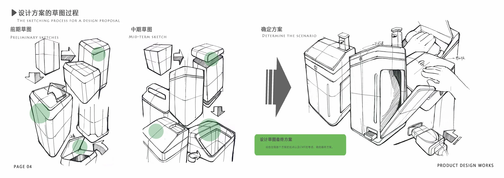
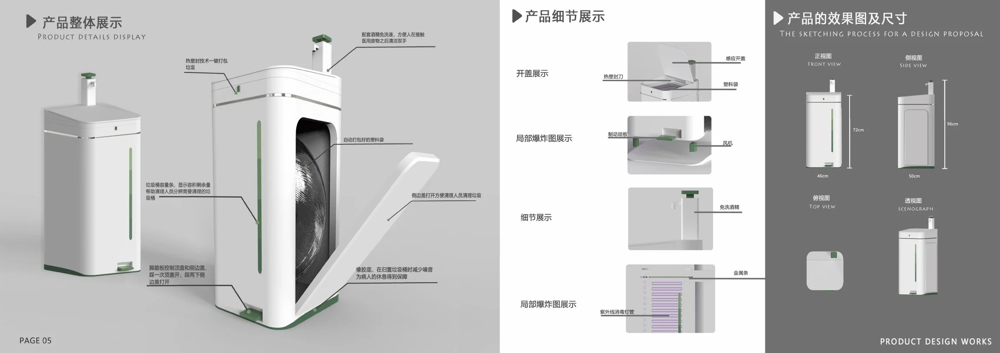
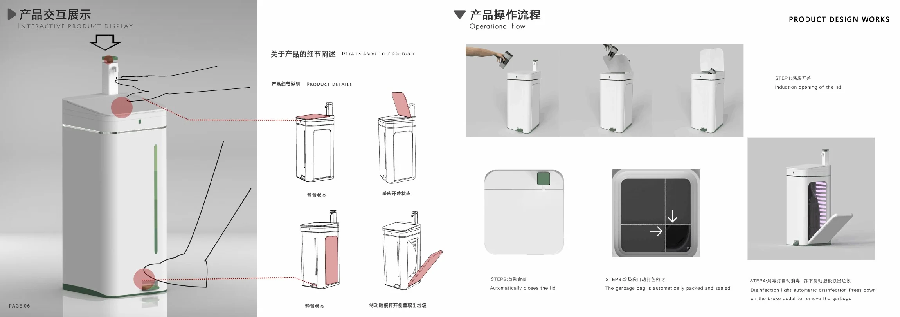
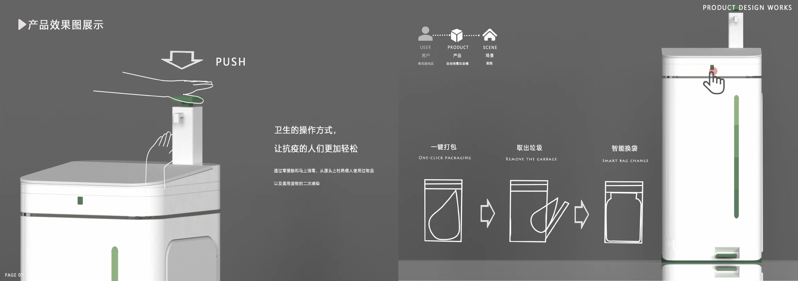
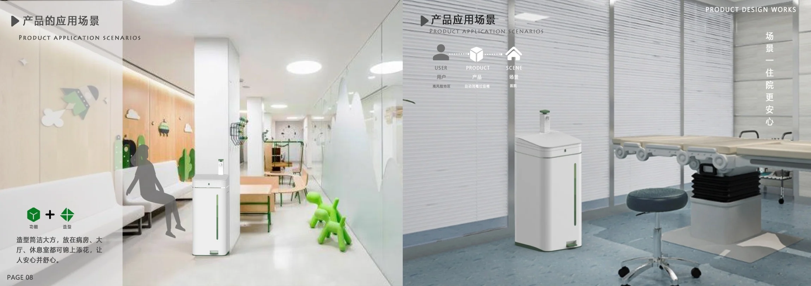

本科 · 公共设施 · 产品设计
防疫用垃圾桶
Waste Bin for Epidemic Prevention
面向医院等公共场所的废弃物投放场景，围绕开盖、投放和取袋重新组织垃圾桶结构。

项目概览
投放与清理场景
从防疫场景中的废弃物处理出发，对照不同垃圾桶的结构和操作方式，梳理投放、取袋与日常清理的需求。
结构与使用流程
通过草图和模型推敲盖体、桶身与脚踏机构的组合，绘制开启、投放和取袋流程，并将方案置入公共环境验证其空间关系。
项目图稿







